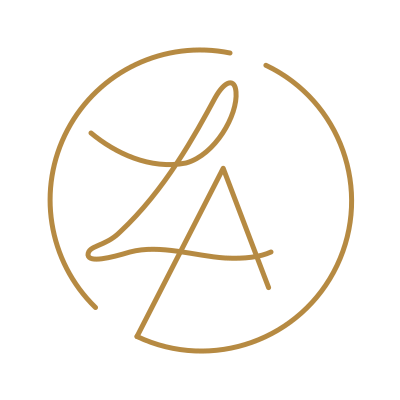
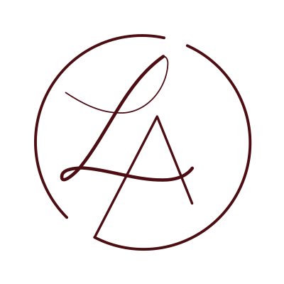
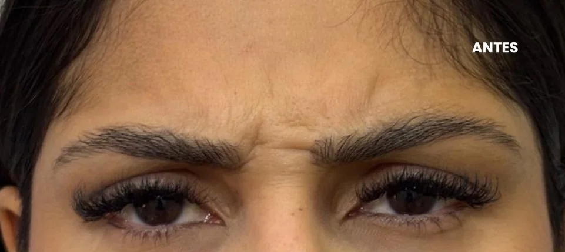
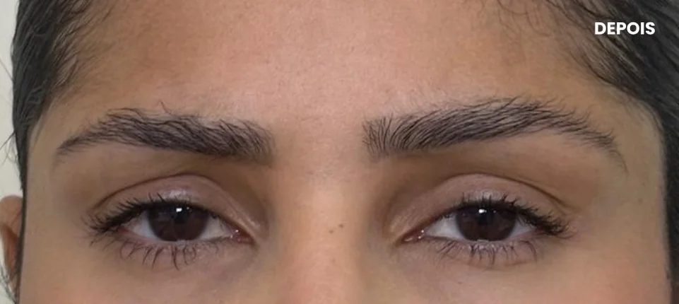
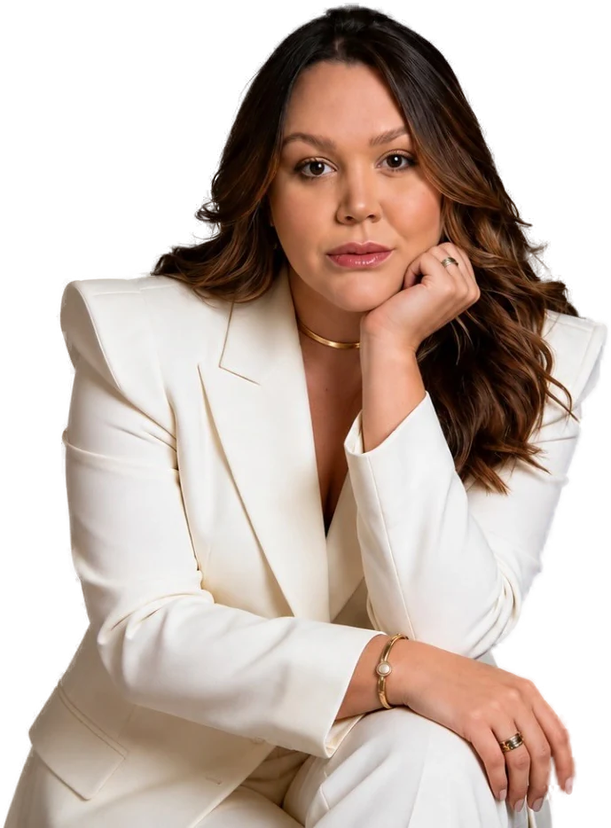
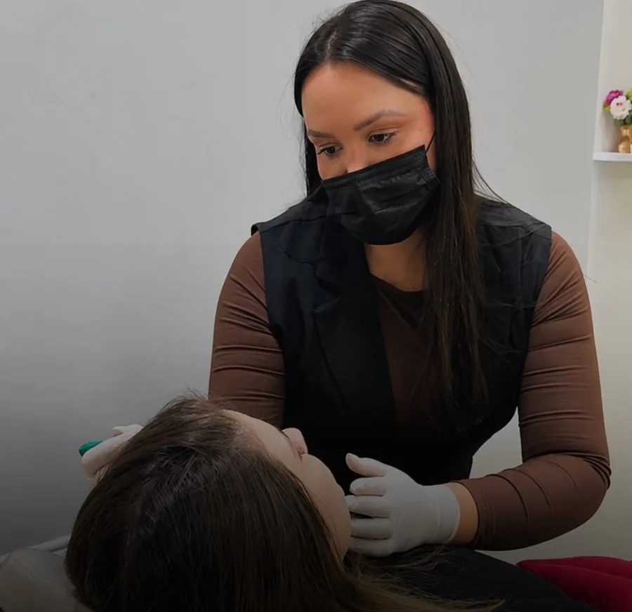

LetíciaArthuso
Harmonização facial em São João del Rei/MG. A marca, as artes e o site, apresentados do jeito que vão ser vistos: em movimento.
RoleA ideia
Realço sua beleza com naturalidade nos detalhes. A frase da sua bio virou o centro do projeto.
O que suas pacientes já dizem precisa aparecer em tudo: atendimento atencioso, resultado natural e nenhum exagero. Cada escolha a seguir parte disso.
O símbolo
O seu LA, redesenhado em vetor.
Parti do monograma que já está nos seus posts e na parede do consultório. Agora ele tem regra: grade, círculo-guia e a mesma espessura em todos os traços.
- Grade de 400 × 400
- Círculo-guia de raio 150
- Os dois arcos abertos
- O A, com a travessa inclinada
- O L em uma linha só, com o laço
A assinatura completa: o símbolo em cima, o nome em Italiana e a função em letras espaçadas. É a versão do topo do site, do cartão e da fachada.
Versões
Três cores, uma marca.
O mesmo desenho em três combinações da paleta, para fundos claros, médios e escuros.



Variações
Um jeito para cada espaço.
Horizontal para o topo do site, vertical para a fachada, só o símbolo para o perfil e o ícone da aba.
Cores
Quatro tons e um dourado.
Seu Instagram hoje usa dourado, off-white e preto. Esta paleta é uma evolução mais quente: o bordô no lugar do preto e o dourado guardado para a logo e os detalhes.
Letras
AaBbCcDdEeFfGgHhIiJjKkLlMm NnOoPpQqRrSsTtUuVvWwXxYyZz 0123456789
Elegante, fina e feminina, sem exagero.
AaBbCcDdEeFfGgHhIiJjKkLlMm NnOoPpQqRrSsTtUuVvWwXxYyZz 0123456789
Simples e fácil de ler, até numa tela pequena de celular.
O feed com a mesma cara do site.
Uma proposta de como ficam seus posts, stories e destaques com a nova identidade. Os textos saíram das suas legendas e as fotos são as suas.
CRO-MG 70325 · São João del Rei/MG
Agende sua avaliação pelo link
Posts
Cada post tem cara de capa de revista: você em primeiro plano, o título grande em dourado, a mesma moldura e o mesmo selo. Na grade, claro e escuro se alternam e o seu rosto aparece em diagonal.
a minha prioridade.
a cara parada?
sempre foi a
minha paixão,
muito antes da
Odontologia.
bioestimulador?
Pele com viço e brilho.
Pele mais firme.
idade certa
para começar?
me senti super à vontade
para falar exatamente
o que eu queria.Paciente de botox

hora marcada,
só para você.
Matozinhos
Minas Gerais
perder a expressão.



juntas o que faz
sentido para você?Primeiro a conversa, depois o plano.
Stories
Para conversar no dia a dia: caixa de perguntas, bastidores e agenda.
o que quiser
sobre botox.

botox?
o seu plano?Avaliação com hora marcada,
em São João del Rei.Agendar avaliação
Carrossel
Conteúdo que ensina e termina no agendamento. Passa sozinho, ou toque nos pontos.
idade certa
para começar?
importa menos
do que a
indicação.Quem define o momento certo é a avaliação, olhando a sua pele e a sua expressão.
faz por você
- 01Suaviza marcas que já existem
- 02Evita linhas mais fundas
- 03Deixa o rosto descansado
começa na
avaliação.
Destaques
Ícones em traço fino, no mesmo desenho da logo.
No mundo real
Do cartão à sacola.
A identidade nas peças do consultório. Toque no cartão para virar.
O consultório
CRO-MG 70325 · Av. Josué de Queirós, 349, Matozinhos · São João del Rei/MG
O site
Pode mexer, está funcionando.
Role dentro das telas, toque nos pontos do rosto e arraste o antes e depois. Pensado primeiro para o celular.
Para fechar
O que eu preciso de você.
- A logo original
Com o arquivo, o desenho fica idêntico ao seu e é aplicado em tudo desta página.
- Autorização das pacientes
Confirmar quais fotos e vídeos de resultado podem ser usados no site e nos posts.
- Revisar os textos
Vieram das suas legendas. Veja se as informações técnicas e as respostas estão do seu jeito.
- WhatsApp e agenda
O (31) 99116-9590 é o número certo? Como fica a agenda durante a gestação?
- Fotos e vídeos originais
Os arquivos do ensaio e dos reels deixam o site e as artes bem mais nítidos.
Pronto para ir ao ar.
Com as suas respostas, o site é ajustado e publicado no seu endereço, e as artes ficam prontas para o seu Instagram.